Sayantika Sahu
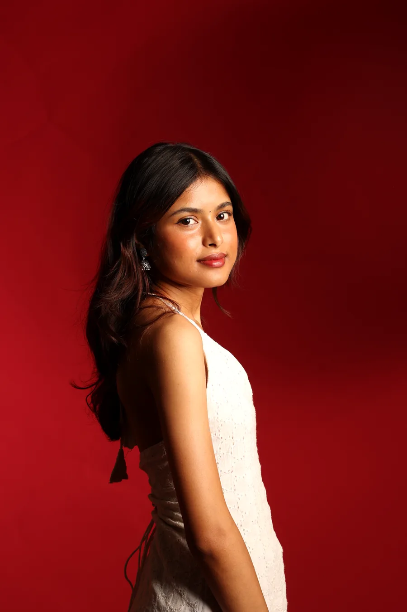
A model with a designer’s eye. Sayantika studies fashion design at NIFT Srinagar, and she reads silhouette, texture and light as closely as she reads the camera.
Crimson
White chikankari on a red seamless backdrop. Hand-embroidered cotton, silver jhumkas and loose hair.
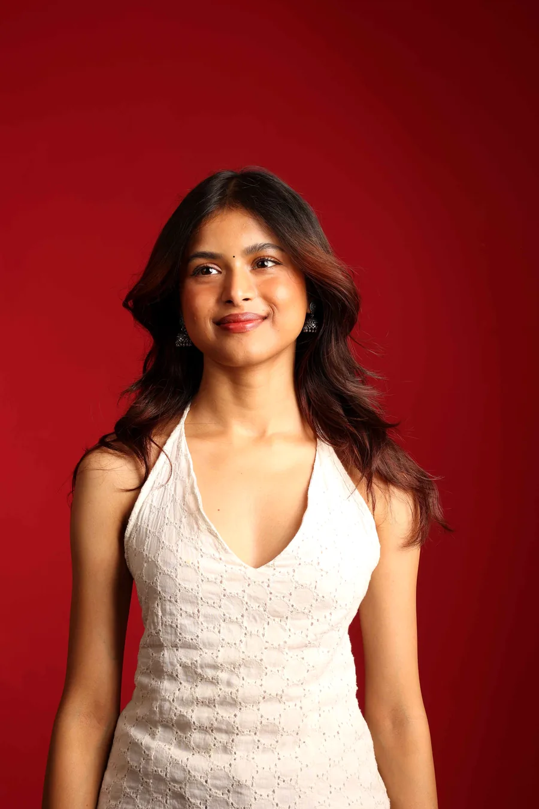
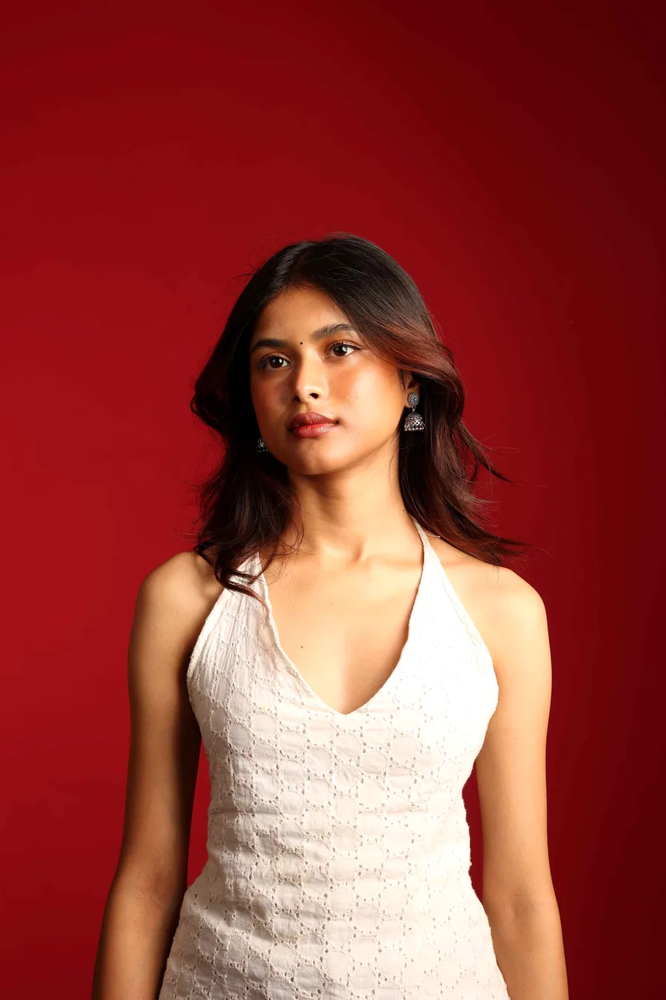
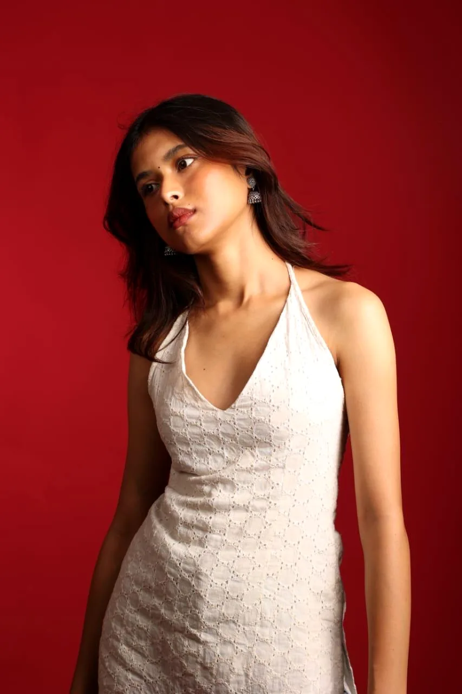
“Stillness, then a turn of the head. Most of the frame is red.”
— Notes on the seriesLight Studies
Two gels and two moods: a warm amber key on a crisp shirt, then cold blue on oversized denim.
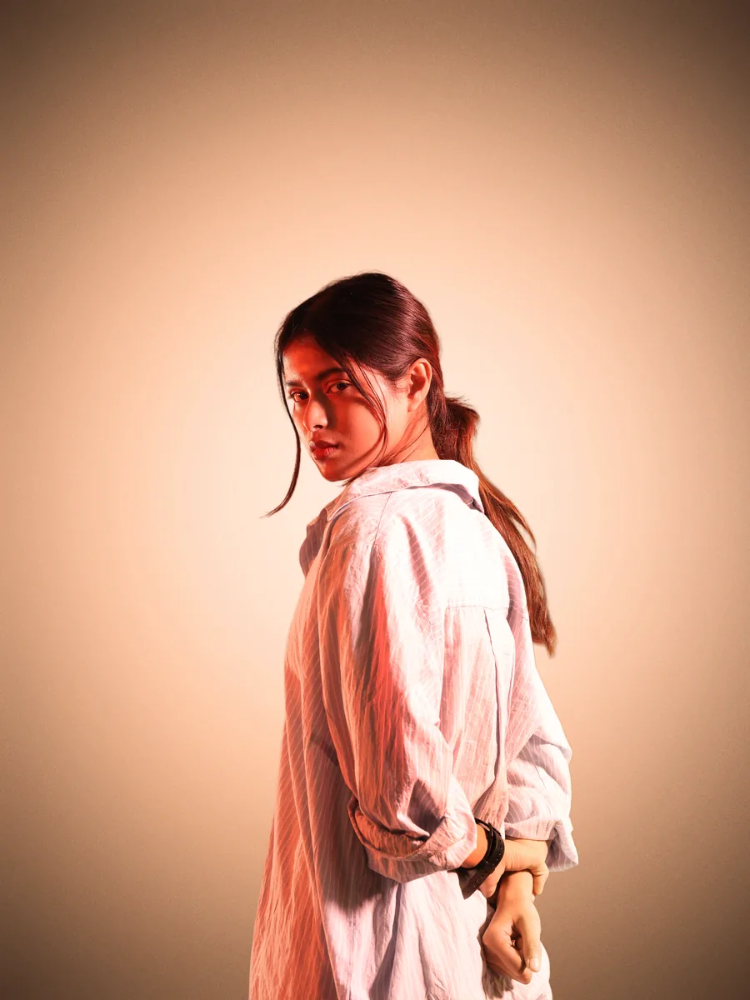
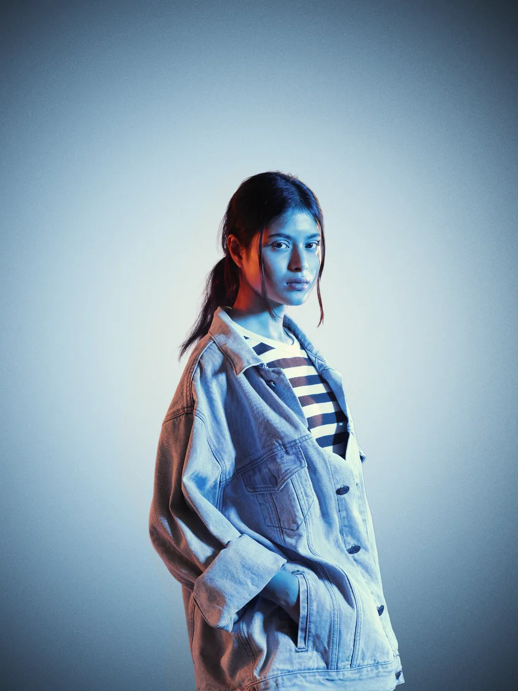
Golden Hour
A rolling shutter, a rusted railing and the last of the sun. Printed romper, stacked beads and a crochet tote.
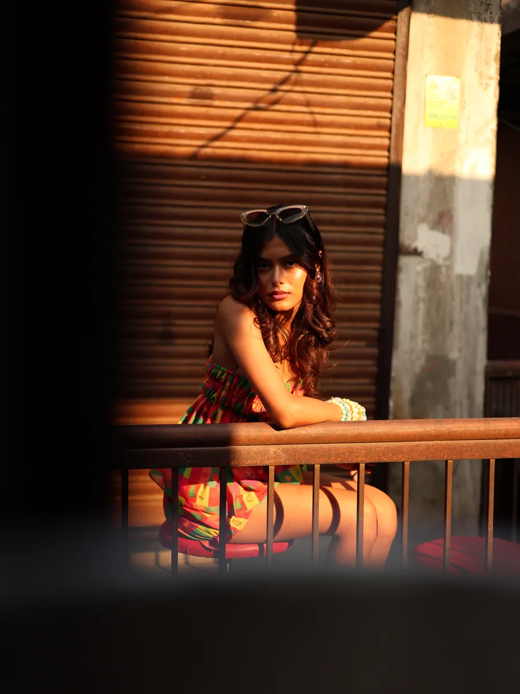
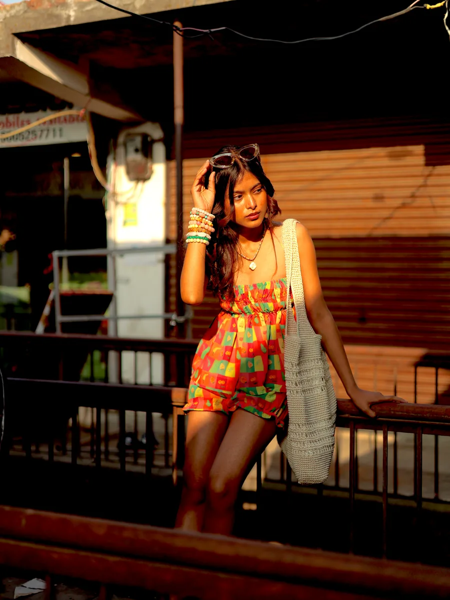
Ivory
A white cyclorama. Sheer embroidered organza, wide pleated trousers, raw denim and heavy boots.
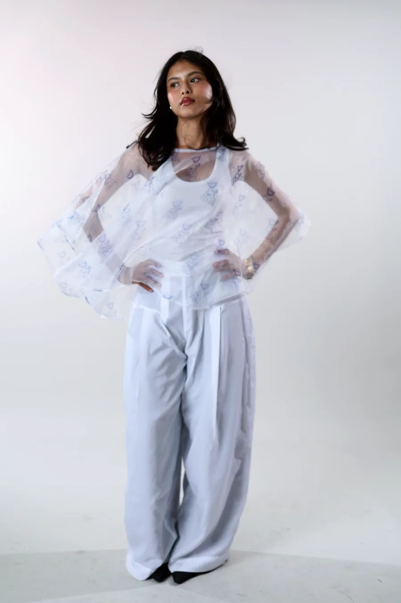
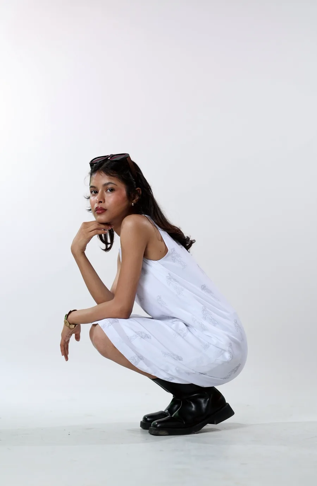
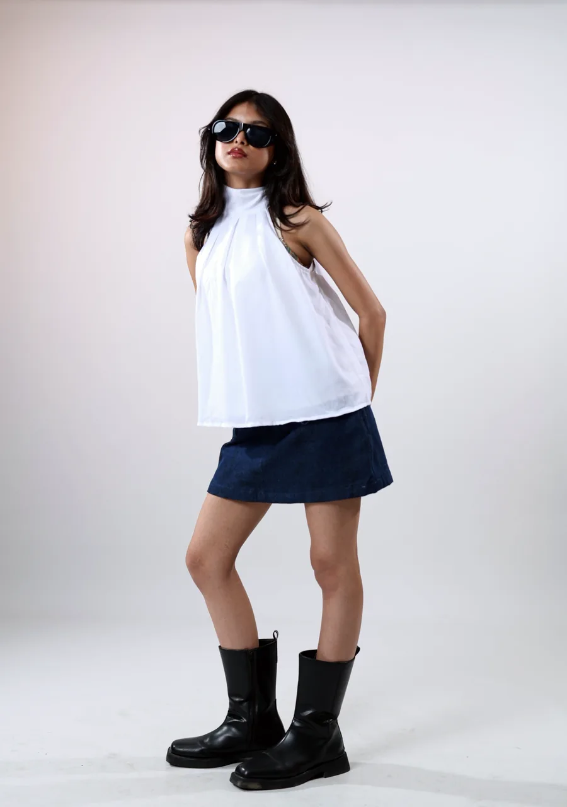
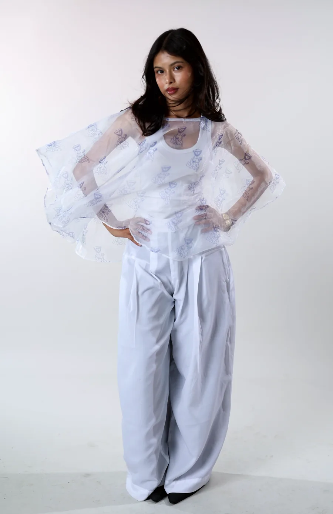
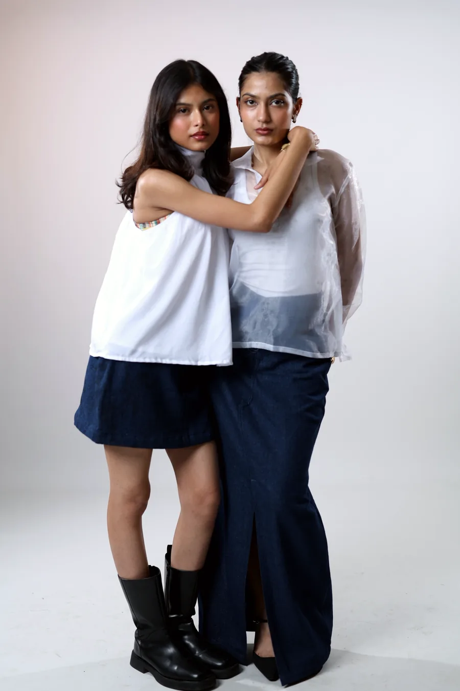

The card.
Sayantika Sahu is a fashion design student at the National Institute of Fashion Technology, Srinagar (2024–2028), and a working model across editorial, beauty and lookbook shoots.
Digitals and full measurements are below. The complete comp card is available on request.
- [ Height ]
- 157 cm5′ 2″
- [ Bust ]
- 83 cm32.5″
- [ Waist ]
- 23″58 cm
- [ Hips ]
- 34″86 cm
- [ Shoes ]
- 4–5 UKEU 37–38
- [ Eyes ]
- Dark brown